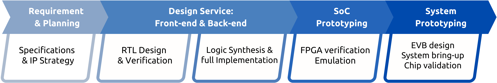

CUSTOM ASIC DESIGN SERVICE
客製化 ASIC 設計服務
從架構規劃到系統驗證的一站式晶片開發解決方案
臻至科技提供專業的客製化 ASIC 設計服務，涵蓋從規格定義、RTL 設計、後端實作到系統驗證與量產前準備。我們結合低功耗 AI 加速器技術與完整的 IC 設計流程，協助客戶加速產品開發週期並降低整體開發風險。
Scroll
ASIC DESIGN FLOW
完整 ASIC 設計流程
我們提供從需求規劃到系統驗證的一站式 ASIC 開發服務，確保設計品質與時程可控，並協助客戶順利完成從概念到量產的晶片開發。

1
Requirement & Planning
與客戶共同定義產品規格、系統架構與 IP 策略，確立設計目標與開發路徑。
2
Design Service: Front-end & Back-end
提供完整的 RTL 設計與驗證服務，並進行邏輯合成與實體設計實作，確保設計品質與時程掌控。
3
SoC Prototyping
透過 FPGA 驗證與模擬進行功能測試與效能評估，加速設計迭代並降低流片風險。
4
System Prototyping
提供 EVB 設計、System Bring-up 與晶片驗證服務，協助客戶完成產品化與量產前準備。
OUR VALUE
為客戶打造高效且可靠的晶片開發流程
一站式 ASIC 設計服務
涵蓋前端設計、後端實作、FPGA 原型驗證與系統開發，提供完整且一致的設計流程。
超低功耗 AI 晶片專業能力
結合 ANIX NPU IP 與低功耗架構技術，協助客戶打造具競爭力的邊緣 AI SoC。
彈性合作與 IP 整合能力
支援客戶自有 IP 或第三方 IP 整合，並提供客製化設計與技術顧問服務。
降低開發風險並加速產品上市
透過 FPGA 原型驗證與系統 Bring-up，縮短開發週期並提升流片成功率。

DOMAINS
客製化 ASIC 應用領域
低功耗邊緣 AI 晶片
工業自動化與智慧製造
穿戴式與消費性電子
智慧監控與視覺感知系統
無人機與自主機器人
物聯網與智慧城市應用
與我們合作，打造下一代智慧晶片
臻至科技致力於提供高品質且具競爭力的 ASIC 設計服務，協助客戶將創新構想轉化為可量產的半導體產品。無論是低功耗邊緣 AI SoC 或客製化專用晶片，我們都能提供專業且可靠的技術支援。